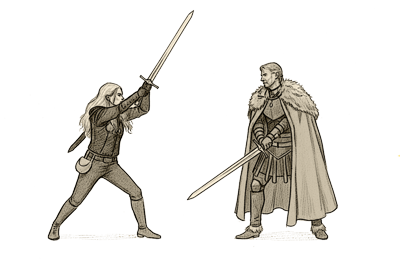

Events
Auf unserer Event-Seite findest du alles, was bei der Gilde Grimsbane geplant ist.
Ob spannende Rollenspielrunden, besondere Abenteuer oder Gildenveranstaltungen

| Vergangene Events: | Zukunftige Events |
|
Drachenfest 2026 28. Juli - 02.August - Drachenfest in Waldeck, Hessen |
